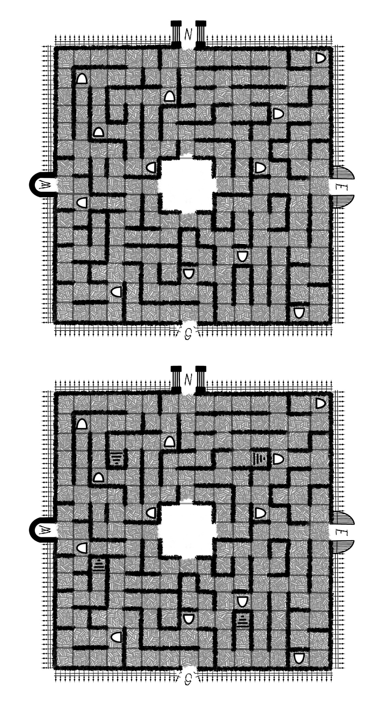

Trapped in the Graveyard is a board game I helped create with some friends in my Intro to Game Design class. The goal of the project was to create a game that is based around a playground activity. I suggested the backyard game Ghost in the Graveyard. Our game Trapped in the Graveyard is played with 3 to 5 people which brings in some of the elements of the game Ghost in the Graveyard. At the center of the board, there is a base. This is where you will start. This base is also a place where you can be safe from the person that is it or the ghost.
Overview
Trapped in the Graveyard is a 3 to 5-player game with many elements from playground and backyard games. There is a Base set up in the middle of the board where you will be safe from the ghost once revealed. Each player has a relic they need to find in order to escape. In order to find these relics, adventurers must travel through the graveyard and search the gravestones. However, once players start collecting relics the ghost becomes revealed! Racing to collect your relics before the ghost, you search for your relics and dash to the escape! Will you make it out alive? Or will you fall victim to the haunted grave? Good Luck.
Graveyard Map
This is the idea for the map/gameboard. This has 2 iterations of it for future development.
Graveyard Map Board

This is of the map layed out.
Player Tokens

These are the player tokens we made for the game.
Relics

These are the Relics that you collect.